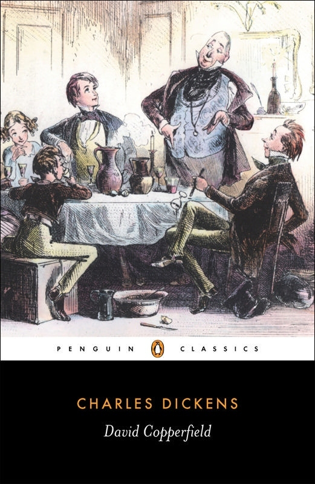

"David Copperfield"
- Read on 2019-10-18
- Rating: ️️️️️
- Format: 🎧 (36 hours 30 minutes)
This felt autobiographical, and may actually be. I don't know. Regardless, it's a somewhat wandering story of the life of David Copperfield - a seemingly normal child/youth/young man in England. Through sicknesses, deaths, and many of the trials and lifestyles of the time, he makes his way through life, with people coming and going. It's fairly anticlimactic, though still enjoyable. Considering the length of the book, and the overall modernization of storytelling, most people now probably wouldn't find this to be the worth the effort. The accents in the audio version were entertaining.
- Prior: Harry potter y la piedra filosofal
- Next: The Waste Lands